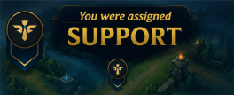

El support impacta en la visión y el control del mapa. Aunque empieza acompañando al ADC en bot, después rota constantemente para ayudar al equipo, colocar wards, iniciar peleas o proteger aliados. Muchas veces es quien controla la información y el tempo de las teamfights.
Support Lane
Farming
El support no depende del farming tradicional, pero sí debe optimizar recursos mediante su item de soporte y control del mapa. Su economía se basa en generar valor a través de visión, utilidad y asistencia al equipo. Un buen soporte sabe cuándo sacrificar recursos personales para beneficiar a sus carries.
Control de oleadas
Aunque no sea quien farmea, el soporte participa activamente en el manejo de oleadas. Puede ayudar a pushear para obtener prioridad, congelar para proteger al ADC o preparar dives con grandes waves. Entender el estado de la línea permite generar mejores oportunidades para el equipo.
Rotaciones y objetivos
El soporte tiene una función central en la preparación de objetivos mediante control de visión y posicionamiento. Debe establecer wards, negar información enemiga y coordinar entradas al río antes de dragones o Barón. Muchas veces, quien domina la visión domina también las peleas de objetivos.
Impacto en el mapa
El support suele tener uno de los mayores impactos macro del juego gracias a sus rotaciones y control de visión. Un soporte activo puede influir en mid, ayudar al jungla y generar presión constante en distintas zonas. Más allá de las estadísticas, su capacidad de crear oportunidades define gran parte del ritmo de la partida.